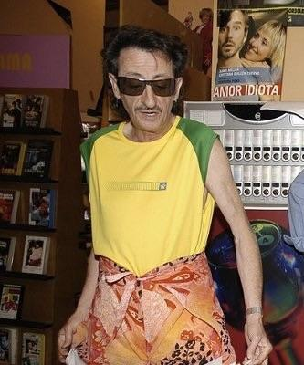

Correo: email@gmail.com | Teléfono: 453987635
Córdoba, España
Me gusta la informática.
ARI Soluciones para construir
Informático | 04/03/2026 - 27/05/2026
Modificar la web de ventas.
IES Gran Capitán
ASIR | X/X/2027